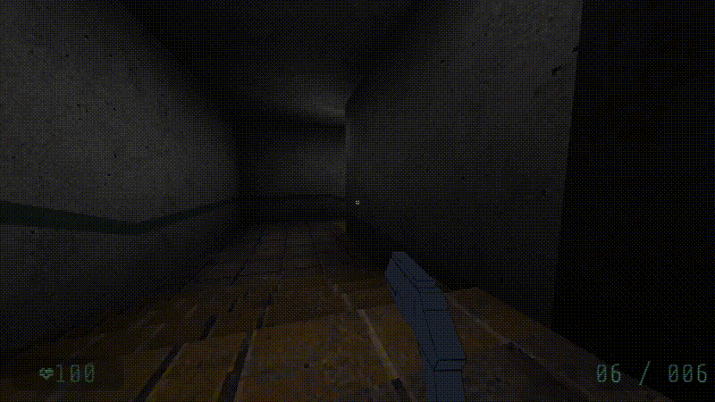
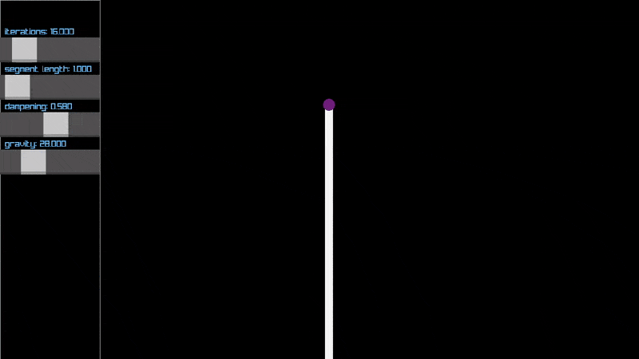
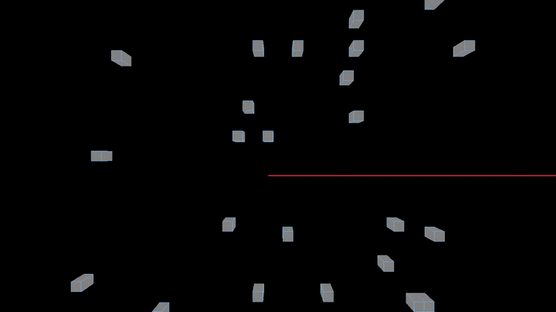
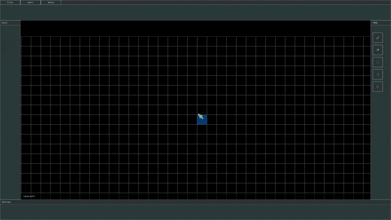

Kai Yasko
Game and Tools Programmer
Projects
Games
Disruptor

Platformer Prototype
Short Demos
Water Effect
Verlet Rope Demo

Laser Reflection Demo

Tools
Tilemap Editor

3D Animation to Spritesheet Tool